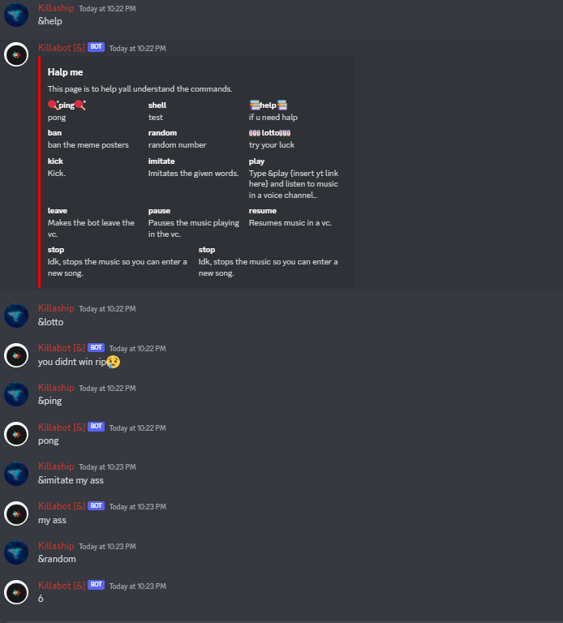

Killabot
Killabot is a Discord bot that I programmed in Python. It hasn't been updated in quite some time, it's not that good, and it's filled with weird stuff from past-me.
It ran under a Replit Repl that I had on in a browser tab during the day on my now-7-year-old Chromebook Asus C201
Later on, it ran on a Raspberry Pi 0 W. (the original, not the model 2)
Nowadays, it runs on a peculiar little Intel Atom-based SBC. It's called the Atomic Pi, and it only has 2 gigabytes of RAM, but it's pretty good for 50 dollars.
